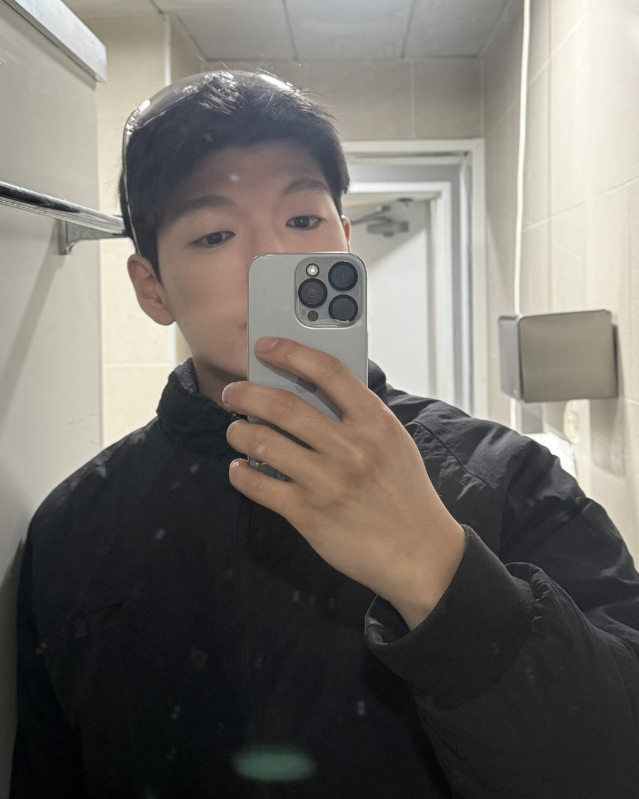
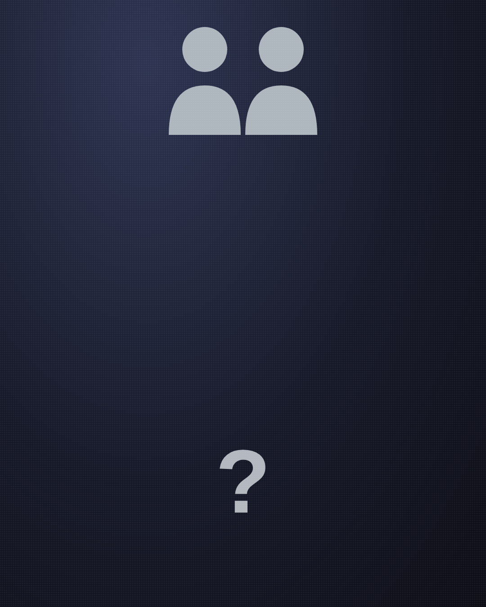
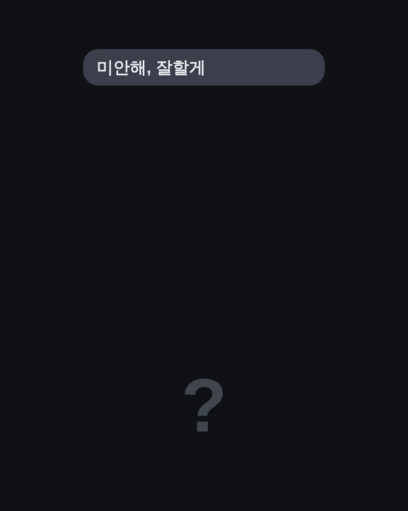
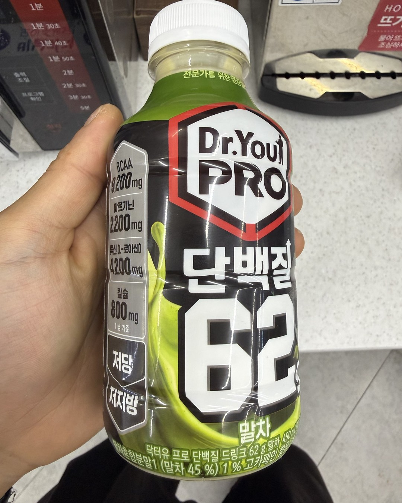
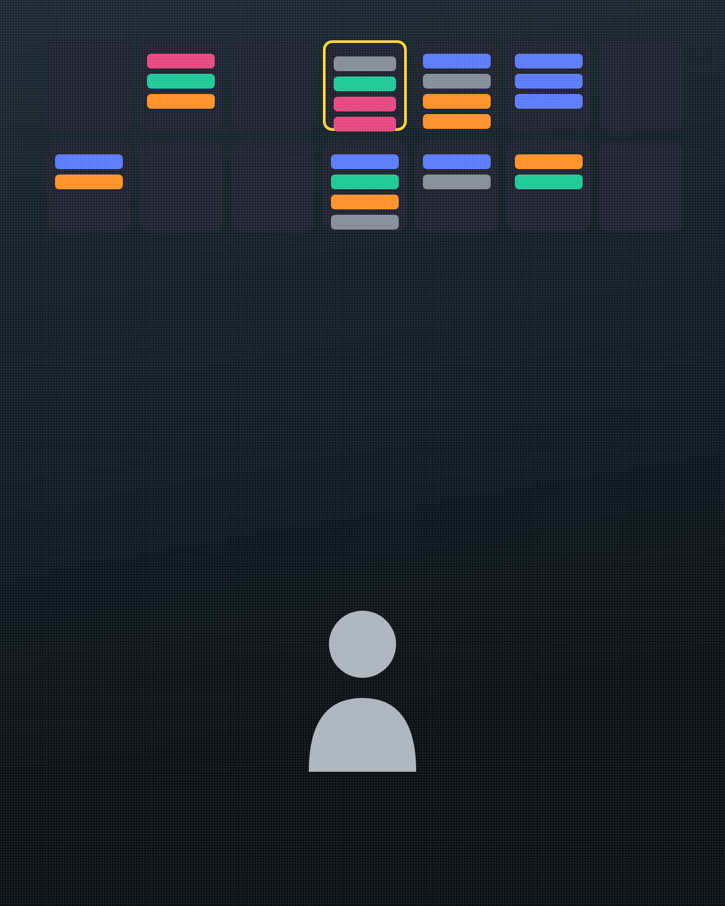
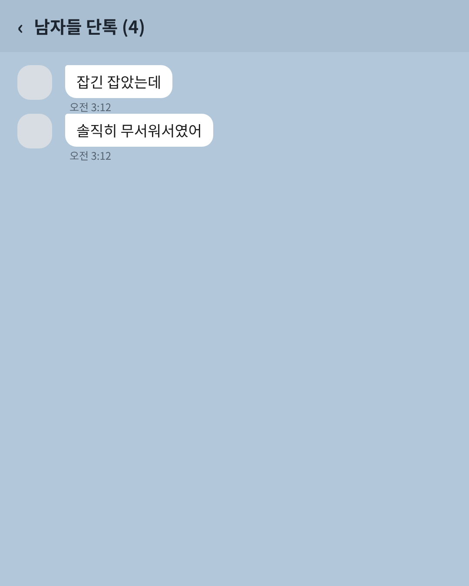
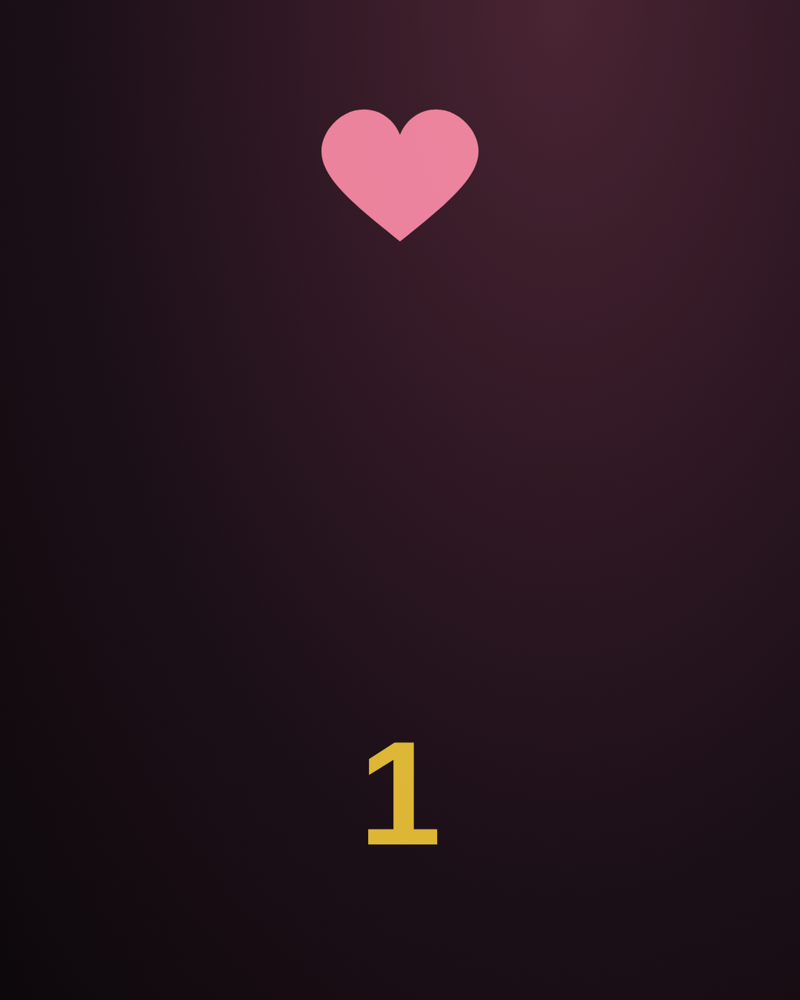
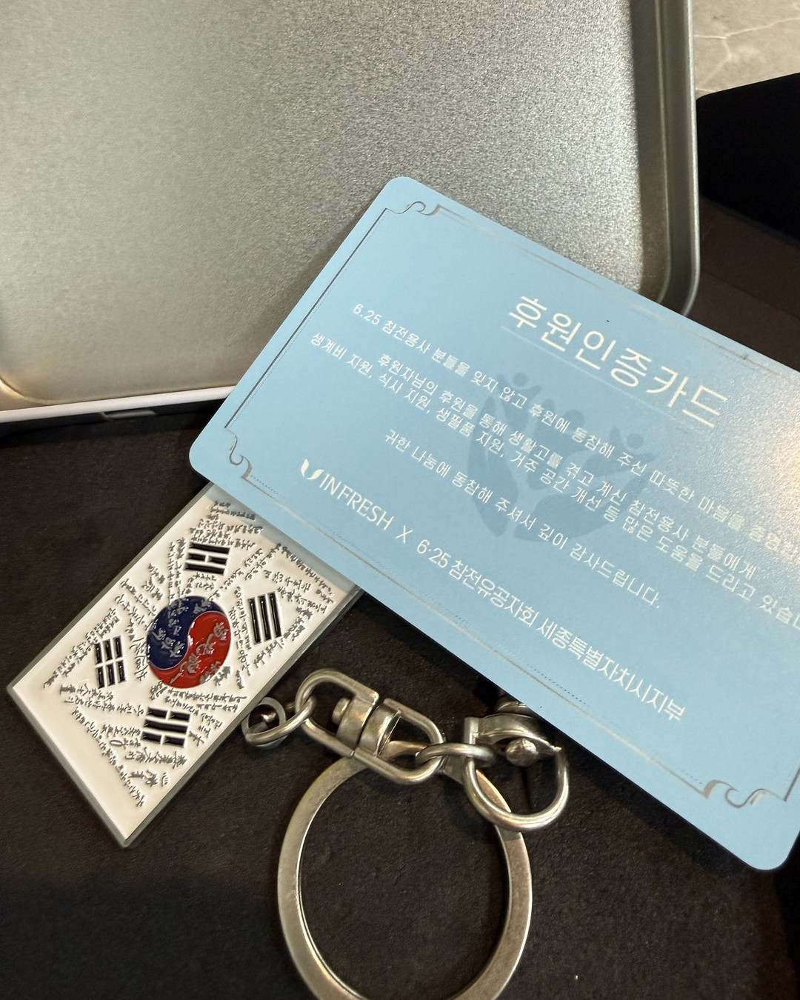
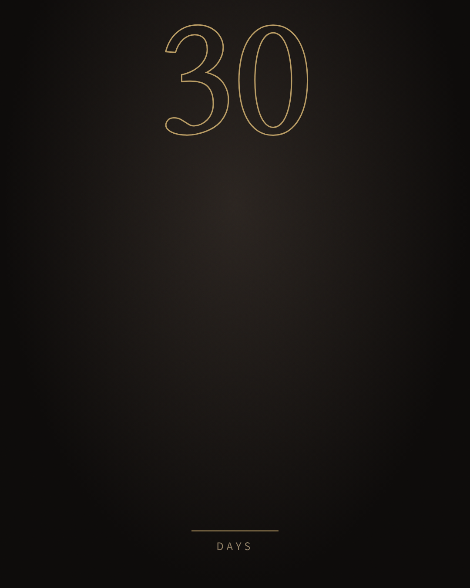

남자가 헤어지자는 말에 붙잡을 때,
진심인지 아는 법 3
(붙잡는다고 다 같은 게 아니에요.)
1/14
@mszexc
넘겨보세요 →

남자가 붙잡는 이유는
사랑일 수도, 익숙함일 수도, 자존심일 수도 있어요.
2/14
@mszexc
남자들끼리 하는 말 #70

첫 번째.
"미안해" 다음에 무엇이 미안한지 말해요.
(진심은 구체적이에요.)
3/14
@mszexc
남자들끼리 하는 말 #70

그냥 "미안해, 잘할게"는
그 순간을 넘기려는 말일 수 있어요.
(무엇을 잘할지가 없으니까요.)
4/14
@mszexc
남자들끼리 하는 말 #70

두 번째.
붙잡은 다음 날에도 달라져 있어요.
(진심은 하루 뒤에 보여요.)
5/14
@mszexc
남자들끼리 하는 말 #70

사흘만 지나도
원래대로 돌아간다면, 그건 불안이었어요.
6/14
@mszexc
남자들끼리 하는 말 #70
세 번째.
당신의 결정을 존중해요.
("네가 원하면 놓아줄게. 그래도 한 번만 기회를 줘.")
7/14
@mszexc
남자들끼리 하는 말 #70

남자들끼리는 이렇게 말해요.
"잡긴 잡았는데, 솔직히 무서워서였어."
(혼자가 되는 게 무서운 붙잡음도 있어요.)
8/14
@mszexc
남자들끼리 하는 말 #70

조심할 붙잡음은
화를 내거나 겁을 주며 막는 거예요.
(그건 진심이 아니라, 통제예요.)
9/14
@mszexc
남자들끼리 하는 말 #70

세 가지가 다 보인다면
한 번은 다시 기회를 줘도 괜찮아요.
10/14
@mszexc
남자들끼리 하는 말 #70

기회를 줄 땐 이렇게.
"딱 하나만 바꿔 줘. 그게 보이면 다시 해 보자."
(조건은 하나, 기한은 분명하게.)
11/14
@mszexc
남자들끼리 하는 말 #70

그리고 그 하나가
한 달 안에 안 보이면, 그게 답이에요.
12/14
@mszexc
남자들끼리 하는 말 #70

붙잡는 말보다
붙잡은 뒤의 행동을 보세요.
13/14
@mszexc
남자들끼리 하는 말 #70
이것만 기억하세요.
진심인 붙잡음은 말이 아니라, 달라진 다음 날로 증명돼요.
남자가 하는 말의 뜻은 전자책 1·2권에 · 프로필 링크에서 무료로 받아보세요
14/14
@mszexc
남자들끼리 하는 말 #70